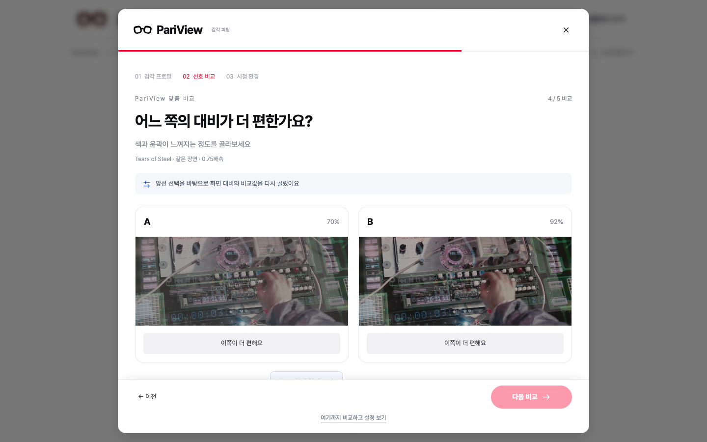
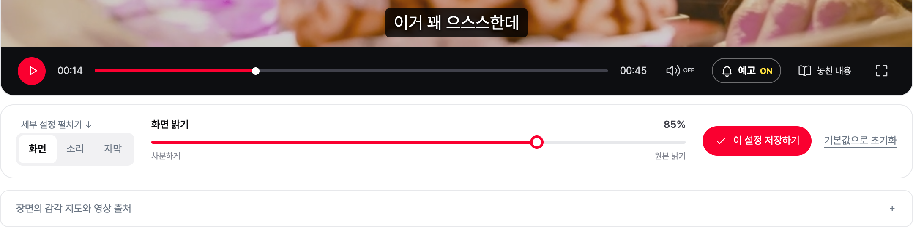
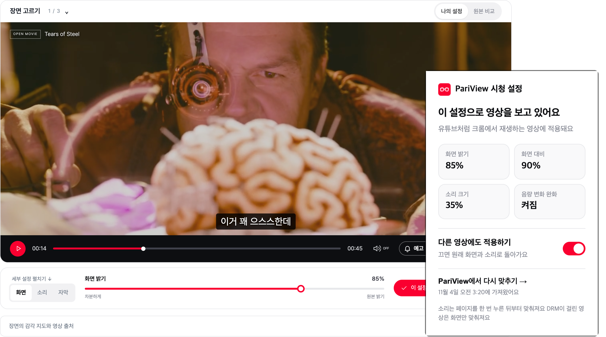

화면과 소리,
내가 정하면 안 되나요?
감각 과부하 감소와 미디어 접근성 향상을 위한 적응형 시청 시스템
소리·빛에 민감한 이용자가 같은 장면을 비교해 고른 설정으로 보고, 크롬에서도 이어서 쓰는 시청 시스템
 웹에서 체험하기장면 비교로 내 설정 찾기
웹에서 체험하기장면 비교로 내 설정 찾기광고 영상 48초왜 필요한지 한눈에
QR
준비 중
사용법 데모 영상프로필부터 조절·저장까지준비 중
공개 배포 중pariview-production.up.railway.app · 크롬 익스텐션 포함
1
배경과 차별점
WHY · 기존 비교 → 차별점 → 이용자 가치같은 영상, 모두에게 같은 경험일까요?
갑작스러운
음량 변화와 효과음
강한 명도·대비와
빠른 화면 전환
집중 흐름 단절과
정보 처리 부담
사용자 설문조사
11.8%기존 OTT 관련
기능 만족도
기능 만족도
60.5%기존 OTT 관련
세부 조절 기능 부족
세부 조절 기능 부족
83%맞춤형 시청각 자극
최적화 기술 사용 의향
최적화 기술 사용 의향
구글 폼 온라인 설문 · 76명 응답 · 신경다양성 당사자 20%
타깃 사용자
신경다양성 이용자자폐 스펙트럼·ADHD 등
ADHD 진료 26만 명(2024)
감각 민감 이용자빛·소리에 민감한 분
고령층 및 일반 이용자65세 이상 20.3%(2025)
OTT 이용률 79.2%(2024)
기존 기능 비교
OTT 접근성Amazon Dialogue Boost
Apple Dim Flashing Lights
Apple Dim Flashing Lights
기기 · 플레이어밝기 · 음량
PariView
소리 자극 조절
△
△
○
빛 자극 조절
△
△
○
같은 장면 A/B로 설정
✕
✕
○
원본 비교 · 되돌리기
△
△
○
자막 선택
△
△
○
→
PariView의 차별점
- 의학 연구를 바탕으로, 진단이 아니라 비교로AI 추천 시작점 → 적응형 A/B → 저장 → 재조절
- 화면·소리·자막을 한 흐름에서5단계 비교
- 지원 영상에서 설정 이어쓰기브라우저에서 설정 복붙 사용하기!
→
이용자 가치 · 기대효과
감각 부담을 내 설정으로언제든 되돌리기
기존 영상 그대로, 플랫폼 밖에서도크롬 익스텐션
특수교육 · 복지기관 도입 제안OTT 접근성 옵션
2
핵심 솔루션 · 실제 화면
01비교

A · B 중 편한 쪽을 누르면 다음 비교가 바뀌어요 · 5회로 시작, 원하면 5회씩 추가
02적용


고른 빛·소리·자막 설정을 영상에 바로 적용해요
03브라우저에서도 같은 설정 유지 가능!


보면서 다시 조절하고, 저장하면 크롬 익스텐션이 유튜브에도 적용해요
AI 추천 시작점
프로필 5자극을 편안하게소리와 빛에 민감한 날이라면이야기에 집중이야기의 흐름을 따라가고 싶다면조금 더 또렷하게또렷하게 듣고 크게 보고 싶다면부드럽게 시작부드러운 화면과 쉬운 말이 필요하다면평소처럼 편안하게평소 화면과 소리를 조금씩 맞추고 싶다면
프로필 5자극을 편안하게소리와 빛에 민감한 날이라면이야기에 집중이야기의 흐름을 따라가고 싶다면조금 더 또렷하게또렷하게 듣고 크게 보고 싶다면부드럽게 시작부드러운 화면과 쉬운 말이 필요하다면평소처럼 편안하게평소 화면과 소리를 조금씩 맞추고 싶다면
3
연구 근거와 핵심 기술
WHY THIS DESIGN · 연구 → 비교·재조절 설계접근 방식🩺 감각 의학NICE CG142 · MEG 연구+🎚️ 오디오 신호처리EBU R128 · 2–4kHz 음성 대역+🏫 특수교육감각실 연구 · 쉬운 자막+♿ 접근성 디자인AAO · ASHA · W3C 자막 지침+🧪 심리물리학베이지안 적응형 선호 비교+💻 소프트웨어웹 · 익스텐션 · AI 추천+🤝 사용자 참여당사자 참여·피드백
🧩 개인차→ 같은 장면 비교 · 재피팅📄 MacLennan et al. 2022 · 자폐 성인 49명
🎚️ 환경 조절→ 화면·소리 항목을 나눠 조절📄 NICE CG142 · 성인 자폐 진단·관리 지침
🕹️ 사용자 통제→ 선택 · 건너뛰기 · 원본 복귀📄 Unwin et al. 2022 · 아동 41명
🧠 시청각 반응→ 소리·빛 변화를 함께 표시 · 예고는 선택형📄 Matsuzaki et al. 2022 · Yosef et al. 2026
📚 논문 11 · 전문자료 6 · 출처는 QR
영상 신호로 측정한 감각 지도Tears of Steel 45초 · 음영 = 변화 구간 · ▲ = 사전 예고
🤖 AI 추천 · Claude 불편한 점 한 문장·선택 항목 → 검토된 후보에서 시작 모드·초기값 제안 · 미리보기·취소 · 미연결 시 규칙 기반
🎧 소리 Web Audio 고음 완화 → 3kHz 말소리 EQ → 음량 압축 → 음량 🖥️ 화면 CSS filter 밝기 · 대비 · 채도 · 색온도 · 실시간 프레임 밝기 측정 → 어두운 장면 보정
🎯 적응형 피팅A/B 선택비슷해요 · 건너뛰기 가능→선호 범위 갱신축별 사후분포→다음 쌍 선택기대 정보이득 최대→5회 후 추정 설정원하면 5회씩 추가 · 최대 20회
4
시스템 구조도 · 기술 요소
SYSTEM검증 유튜브 실측 10항목 · 익스텐션 자동 테스트 32항목 · Playwright 4개 화면 폭 배포 Docker · Railway 공개 서버
사업화 · 지식재산 · 향후
시장성OTT 이용률 79.2%(2024) · 유럽접근성법(EAA) 2025.6 시행 · 장애인차별금지법 정보접근권
도입 · 사업화교육·복지기관 설치형 · 플레이어 연동 · 운영 지원 · 코어 오픈소스(MIT) · OTT용 접근성 SDK
지식재산권같은 장면 A/B로 개인 설정값 도출 + 브라우저 확장 연동 방법 · 특허 출원 검토 중
신산업 · 향후AI 디지털 헬스케어 · 접근성 기술 · 당사자 참여 검증 완료 · 참가자 10명 정확도·SUS 평가 · 지원 영상 확대